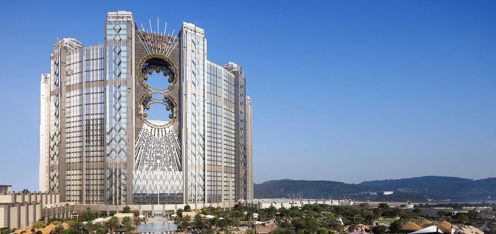
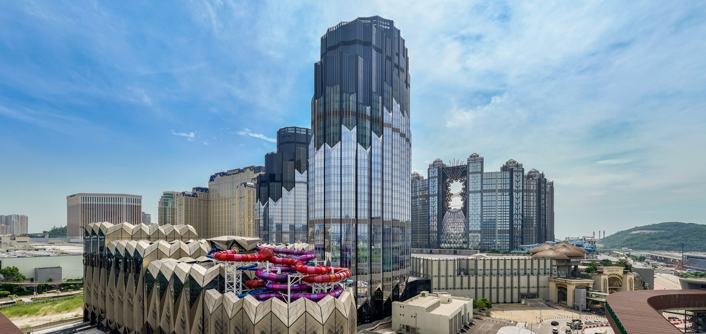
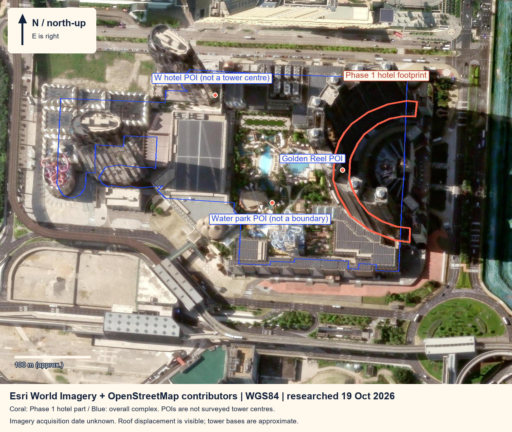
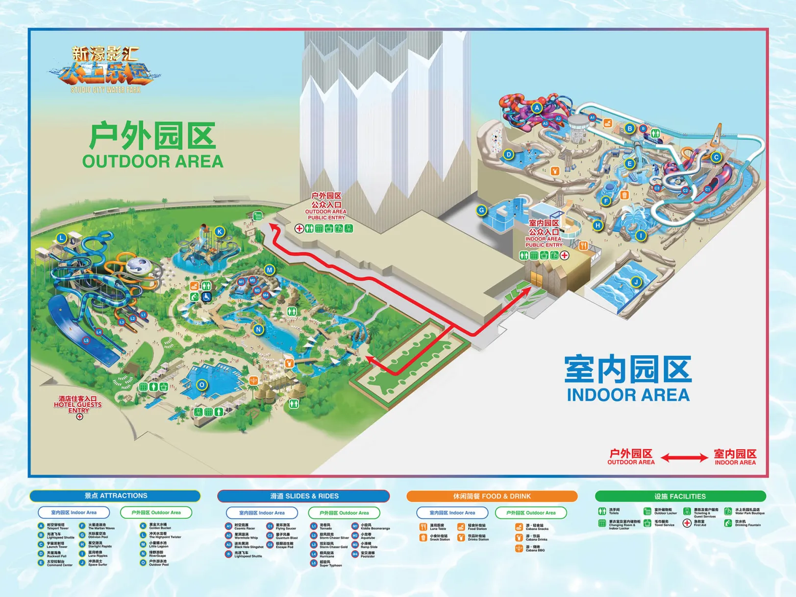

多种非博彩体验同场
公开产品覆盖酒店、影汇之星、现场演出场馆与室内外水乐园等触点。
展开分析
多产品并存是可观察条件；能否形成更合适的家庭组合，还需检验参与规则、时间衔接与购买路径。
ARCHITECTURE × FAMILY JOURNEY
INTERACTIVE EXHIBITION / V3.1旅游市场行销 · 企业案例
—— 以亲子度假市场为重点
从真实建筑关系出发，
把一座综合度假村，
读成一段家庭旅程。
顶部 → 一侧上弧 → 同侧腰部 → 下弧 → 底部 → 另一侧腰部 → 顶部。普通滚动浏览页面，暂停请用上方舱体按钮。
拖动旋转 · 按钮 / 键盘 + − 缩放 · 普通滚动浏览页面。17厢沿同一条不交叉8字外缘运行，座舱保持竖直。演示速度非实测。
酒店、水上乐园、观景体验、餐饮和室内娱乐，组成了多个可衔接的触点。家庭真正要完成的任务，是在成员偏好、停留时间和参与规则之间做选择。
研究问题：不同家庭结构与停留长度，是否需要不同的产品重点、信息表达和渠道衔接？
下列年龄区间是团队分析分组；是否适合参与具体项目，须核对官方年龄、身高和安全规则。
选择将同步沙盘高亮与路线、STP、4P 和策略行动。
竞品比较口径 同区综合度假村、家庭景点与单项体验，应在相同日期、家庭结构、停留长度和购买内容下比较。本页未填未经核实的价格、市场份额或销售成效。
公开产品覆盖酒店、影汇之星、现场演出场馆与室内外水乐园等触点。
多产品并存是可观察条件；能否形成更合适的家庭组合，还需检验参与规则、时间衔接与购买路径。
项目多，可能令家庭难以比较适用条件、行程安排与预订步骤。
走查官方信息页面，访谈不同年龄家庭，记录查找规则、比较组合与跳转预订时遇到的阻力。
旅游统计可提供客源、留宿/不过夜、逗留时间与酒店住客等研究维度。
先确定同口径时间范围，再结合家庭调研；城市旅客统计不能直接代表本企业亲子客群。
家庭可能比较其他住宿、景点和单项娱乐安排。
在同一出游日期与家庭结构下整理竞品的包含内容、规则和家庭总支出，再讨论差异。
酒店与多种非博彩体验，提供组合讨论入口。
需走查：适用人群、参与规则与预订条件是否清楚？本页不填房价、票价或折扣。
需核对：同日期家庭总价、包含项目与退改条款。企业与景点有官方信息入口。
需走查：从内容到官方预订，信息和规则是否连续？团队示例不代表企业现行活动。
需核对：主题是否对应真实规则与当前可售产品？策略选择会同步重组沙盘路线、业务高亮、产品、渠道和执行步骤。
观察点击、咨询与选择意向，是后续测试计划；不代表已有转化率或销售成效。
平面关系由 OpenStreetMap 一期酒店轮廓与北朝上卫星图交叉校准，建筑立面参考建筑师与酒店官方照片。二期塔基位置、建筑高度和细部经简化。
餐饮与娱乐使用区域标记，未编造独立建筑；酒店泳池与水乐园分别呈现。家庭细分、定位、路线和策略均是团队待验证的研究建议。
完整来源、相对位置与近似边界 ↗



默认按需绘制。可暂停观景厢演示；系统“减少动态效果”会关闭持续动画并立即切换拆解状态。WebGL 不可用时仍可选择与拆解二维平面图。
rAF 间隔只描述本次浏览器调度；JavaScript 提交耗时不包含 GPU 完成时间，不能代替跨设备帧率保证。